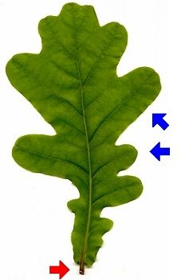

Das Blatt ist gelappt.
 Im oberen Teil ist es viel breiter als in der Nähe des Stiels.
Die Lappen sind rund und ungleich groß.
Der Blattstiel ist sehr kurz.
 Im Herbst werden die Blätter der Stieleiche gelb oder braun. Sie können im Winter sehr lange am Baum hängen bleiben, manchmal bis zum Frühling.
Im Herbst werden die Blätter der Stieleiche gelb oder braun. Sie können im Winter sehr lange am Baum hängen bleiben, manchmal bis zum Frühling.